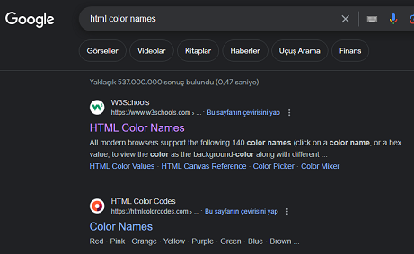
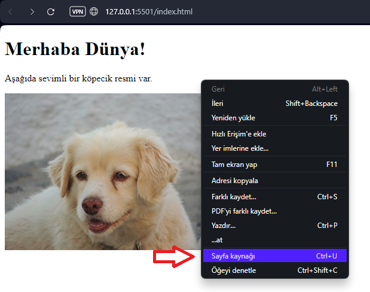
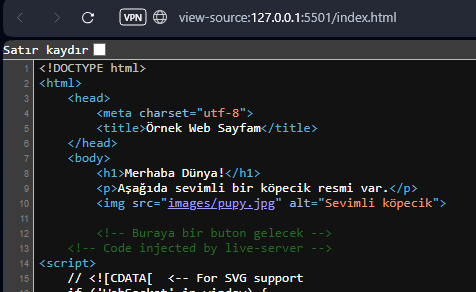

Bağlı özelliklerden kısaca bahsetmiştik. Ama üzerinden tekrar geçmekte fayda var. Bağlı özellikler bir eleman hakkında tarayıcıya ilave bilgiler sağlamak için kullanılır. Bu değerler eleman içeriğinde sayfada görünmezler. Tüm HTML elemanları bağlı özelliklere sahip olabilir.
Bağlı özellikler yazılırken belirlenmiş kurallar vardır:
<meta charset="utf-8"> gibi.:isim="değer" formatında bildirilmelidir.
Daha önce index.html dosyamız içinde resim gösterirken <img>
elemanının src (kaynak-source) özelliğini kullanmıştık.
Bir çok farklı bağlı özellikler olabilir. src özelliği bağlı olduğu
elemanın iliştirildiği dosyanın yerini gösterir. <img> elemanında
kullanıldığı bu yerde tarayıcıya resim dosyasının adını bildiriyor. Burada kullanılan
images/pupy.jpg değeri tarayıcıya resmin index.html dosyasının
bulunduğu klasörün bir alt klasörü olan images klasöründe pupy.jpg isimli
dosya olduğunu bildiriyor. Bu durumda tarayıcı kodda o img elemanının
tarif ettiği yerde bu dosyadaki resmi yayınlayacaktır.
alt bağlı özelliği ise resim bir sebepten tarayıcıya yüklenemezse kullanıcıya
gösterilecek yazılı mesajı içerir. alt özelliğinin başka bir kullanım amacı
da "Screen Reader" (ekran okuyucu) uygulaması ile sayfayı inceleyen görme engelli
kullanıcılara resim hakkında bilgi vermektir. Bu yüzden sayfanızda görme engellilerin
de dikkatini çekecek bir şeyler olduğunu düşünüyorsanız alt özelliğinde
resmi anlatan daha açıklayıcı bilgiler veriniz.
Daha bir çok bağlı özellik var. Bunları ilerledikçe görmeye devam edeceğiz.
Bu başlıkta sayfanızdaki yazıların görünümünü tayin eden elemanlardan bahsedeceğiz.
Başlık (heading) elemanlarından başlayalım. Başlık elemanları <h1> den
<h6> ya kadar olan elemanlardır. Hadi gelin index.html içindeki
<h1> elemanının altına 2 tane daha diğer başlıklardan ekleyelim.
İlk 3 header elemanı genellikle çok kullanılır. Sonrakiler küçük olmaları sebebiyle tercih edilmez.
Örneğimizde bir de paragraf (<p>) elemanı kullanmıştık. Paragraflar
normal boyutta yazılardan oluşan bloklardır. Bu yazı da paragraflardan oluşuyor ancak ben
yazıların daha rahat okunması için tarayıcının standart paragraf yazı boyutunu biraz büyüttüm.
Daha önceki bölümde verdiğim çıktı resimlerine bakarsanız, paragrafın standart yazı boyutu
o kadardır. Şimdi index.html dosyamıza birkeç paragraf daha ekleyelim bakalım.
Resimden göreceğiniz gibi paragraflar arasında otomatik olarak boşluklar bırakılıyor.
Bir diğer yazı şekillendirme elemanı da listeler. Bir çok web içeriğinde listeler kullanılır.
2 çeşit liste var, ilki sıra numaralı liste olan <ol> elemanı (ordered list -
sıralı liste) ve numarasız liste olan <ul> elemanı (unordered list -
sırasız liste). Liste içindeki her liste elemanı da her iki eleman için <li>
(list item - liste elemanı) elemanıdır.
Örneğin bir alınacaklar listesi yaparken sıra numaralarının önemi yok, burada numarasız liste kullanılır.
Alınacaklar :
Sıralı bir şeyleri belirtmek için, örneğin bir yemek yapılışı tarif ederken sıralı
liste kullanılır. Tek farkı yukarıdaki kodda <ul> elemanı yerine
<ol> elemanı kullanmaktır. Hadi listemiz numaralı hale getirelim.
Alınacaklar :
Bu kadar yazı şekillendirme bilgisi yeterli şimdilik. Devam ettikçe bilgilerimiz çoğalacak. İnterneti kullanmaya ilk başladığım yılları hatırlıyorum da bu öğrendiklerimiz kadar bile içerik şekillendirme yoktu, birçok web sayfası dümdüz yazılardan oluşuyordu.
Bağlantılar (link'ler) web'i web yapan en önemli elemanlardan biridir. Bu başlıkta sayfanızdan diğer sayfa ya da web sitelerine nasıl bağlantı yapılacağını göreceğiz. Hemen her web sayfasında bağlantılar bulunur. Bunlara tıklanınca tarayıcınız başka bir sayfa yada siteye geçecektir. Bağlantılar bir yazı, bir resim ya da diğer herhangi bir HTML eleman olabilir.
Bir bağlantıyı oluşturmak için <a> (anchor - çapa) elemanı ve onun
href bağlı özelliği kullanılır. href özelliğine değer olarak
kullanıcının tıkladığında gitmesini istediğimiz web sayfası adresi girilir. Hypertext
Reference kelimelerinden üretilmiştir, bağlantı yazısı referansı gibi bir anlamı vardır.
Adım adım Google sayfasına bir link oluşturalım
Bu bağlantı henüz tıklandığında bir yere gitmiyor, çünkü href özelliğine
değer girilmemiş. Şimdi hedef adres değerini de girelim.
Dikkat ederseniz kursörü üzerine getirince tıklanabilir olduğunu belirten parmak şeklinde görünüyor. Artık bağlantıya tıkladığınızda tarayıcı Google sitesine gidecektir.
<a> elemanı içeriğine ne koyarsanız onun üzerine tıklanınca bağlantıya
geçiş gerçekleşir. İçerikte bir ya da birden fazla HTML eleman olabilir. Mesela sayfadaki
resime tıklayınca sadece resmin olduğu dosyayı göstermesini sağlayalım.
Gördüğünüz gibi resmin kodunu bir <a> elemanının içine aldık ve
href özelliğine de resmin adresini girdik. Şimdi resme tıklarsanız tek
başına resim dosyası gösterilecektir. Buna benzer içiçe eleman kullanımları web
sayfası tasarımlarında çok sıklıkla kullanacağınız şeyler olacak. Ama bir şey daha ,
yukarıdaki kodu tek satır yazmak yerine şöyle yazın:
Böylece kodunuzda içiçe olan elemanlar daha anlaşılabilir bir şekilde görünecektir.
Bağlantılar konusunda bir diğer önemli nokta da renkleri. Tarayıcılarda default olarak bağlantılar ziyaret edilmeden önce yazıları mavi olacaktır, sayfayı daha önce ziyaret etmişseniz rengi mor'a dönecektir. Bunu zaten Google aramalarınızda falan daha önce ziyaret ettiğiniz bir sayfa denk geldiğinde görüyorsunuz.
gibi.
Yorumlar yazılım geliştirirken size çok lazım olan şeyler. Kodun içinde neler yaptığınızı ya da yapacağınızı daha sonraki bir zamanda rahat hatırlamak için kodun arasına yorum eklersiniz. Bu yorumlar bir ya da birkaç satırdan oluşabilir. Ama bunların tarayıcınız tarafından dikkate alınmaması gerekir. Bu amaçla yorumlar belirlenen bir formata göre yazılırlar. index.html dosyamızı şu hale getirelim :
Yukarıda görünen yeşil renkteki satır bir yorum satırıdır. <!-- ile
başlar ve --> ile biter. Bu elemanın içindekiler tarayıcı tarafından
sayfada gösterilmezler. İsterseniz sayfadaki herhangi eleman ya da elemanları da bu
şekilde çevreleyerek geçici olarak görünmez yapabilirsiniz. Kodunuzu silmediğiniz için
sonradan geri dönmesi kolay olur.
Kaynak kodu denen şey bir web sitesi tasarlarken ya da bir program yazarken kullandığınız herşey demektir. Bununiçinde yazılar, resimler, script'ler, medya dosyaları vs hepsi vardır. İlk web sayfamızı incelersek içinde index.html dosyası ve bir resim var. Eğer birine sitemizin kaynak kodu lazım olursa ona sadece html dosyalarını vermemiz yetersiz olur. Bizim sitemizin kaynak kodu aslında "ilk-sayfam" klasörünün tamamıdır.
Bir de internette baktığımız sayfanın kaynak kodunu görmek isteyebiliriz. Tüm tarayıcılarda sayfa üzerinde bir yere sağ tıkladığımızda açılan menüde "View web page source" ya da Türkçesi "Sayfa kaynağını göster" seçeneği vardır. Şimdi kendi yazdığımız web sayfasının kaynağına bir bakalım.
Açılan yeni sekmede sayfamızın kaynak kodu görünür.

Gördüğünüz üzere index.html içine yazdığımız her kod burada görünüyor.
Aşağıdaki <script> elemanını ve onun kalabalık içeriğini dikkate
almayın, VSCode editör Live Server ile sayfamızı kodu değiştirip kaydettiğimizde
otomatik yenileme yapmak için o kodu oraya ilave etmiş. Zaten yorum satırında da
bunu belirtiyor.
Şimdi gidin bir de gelişmiş bir web sayfasının kaynak kodunu açın ve görün elemanlar ne kadar uğraşmış o sayfayı yapmaya. Ama merak etmeyin siz de oralara geleceksiniz sabır gerekiyor birazcık.
.
.
{kind=link}